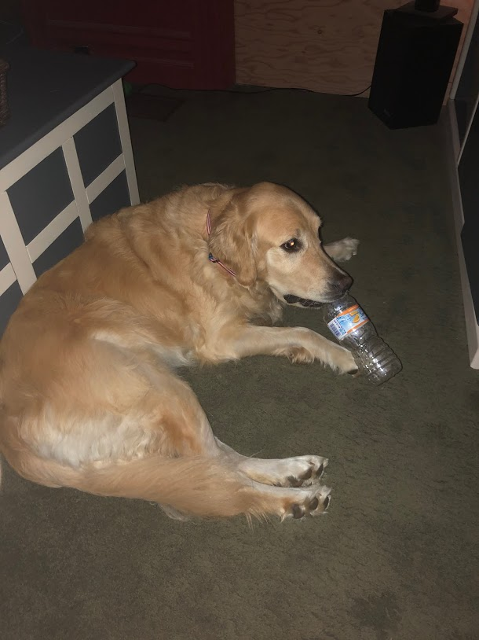

The month of my birthday. I couldn't find any really good images I wanted to share, so have Gracie doing something she always loved doing since we first brought her home - chewing on a bottle. You may also notice there's wood in the background there. The living room's interior was at the time being torn apart so it could be expanded. Previous ImageNext Image